This was a followup on the previous experiment. Since a tree built to exhaustion with a higher minimum leaf size will have fewer nodes than a tree built to exhaustion with a lower minimum leaf size, it means the forest would have overall less complexity (ie., less node count). Due to the nature of minimum complexity requirements for a model to be accurate, it was important to ensure that a forest with a higher minimum leaf size could grow to the same number of nodes regardless of the tree count, and attempt to compete from an accuracy perspective.
A few interesting results came to light here. When trees have the smallest minimum leaf size of 1, literally a tree grown to exhaustion so that each leaf contains one sample, the forest has a slower learning ascent, meaning more trees are required to hit the plateau of accuracy. As the minimum leaf size slowly increases we hit see a sweet spot emerge whereby the accuracy plateau is reached much quicker (around 3-4 minimum leaf size), though the maximum accuracy is no greater. As we continue to push the minimum leaf size higher, the accuracy plateau is still achieved very quickly, but the maximum accuracy of the model even over many many trees (thousands in this case) is much lower. Even as the complexity of the model increases, the boundaries of division in the feature space are so fuzzy that even when averaged together it underfits.
Note that the model was not fully finished in this experiments as the trend became clear and it had already run for 6 days. The results show that orthogonal space paritioning, even if it is randomized, is most affective when the boundaries are grown to exhaustion (assuming the dataset isnt adversarial or excessively noisy). This is very similar to the results of a KNN model which creates a non-linear voronoi boundary between samples. Without further layers of abstraction, the model is at best a fuzzy lookup table in n-space.
In theory you could create a list of orthogonal hyper-regions in feature space, and average the results and achieve the same result, though the algorithm for growing extra random trees is really just a more efficient means of doing that intelligently. The next experiment may explore a method of weighting a knn's feature space using greedy inclusion or exclusion of features to eliminate confounding features in the euclidean distance space.
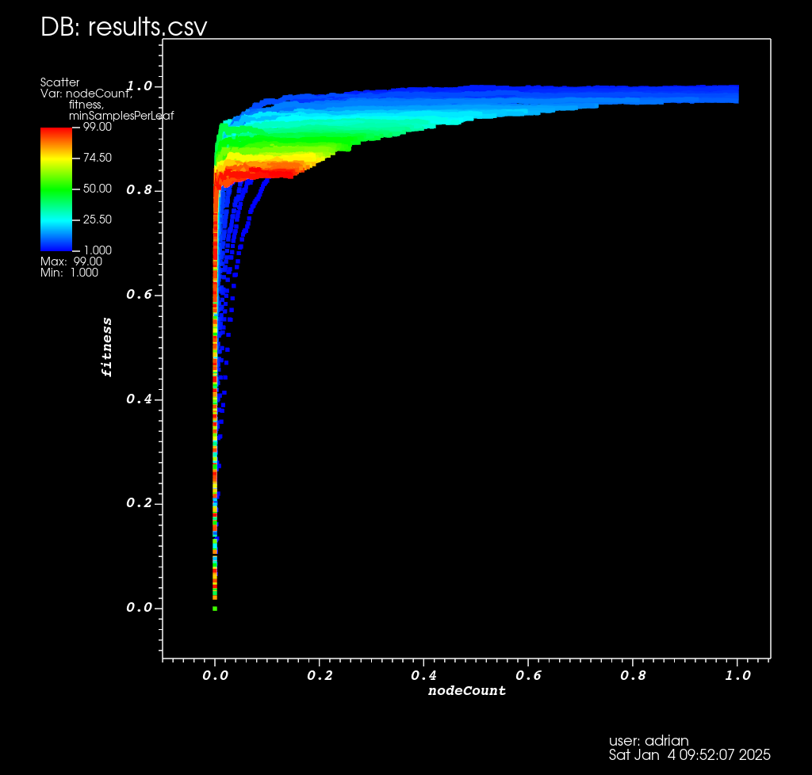 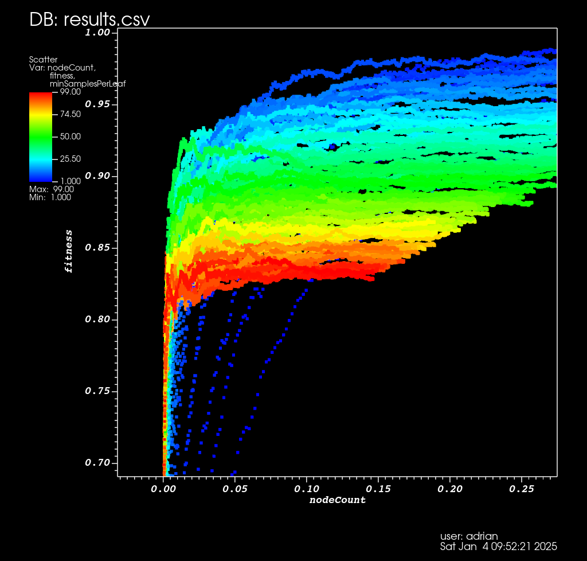 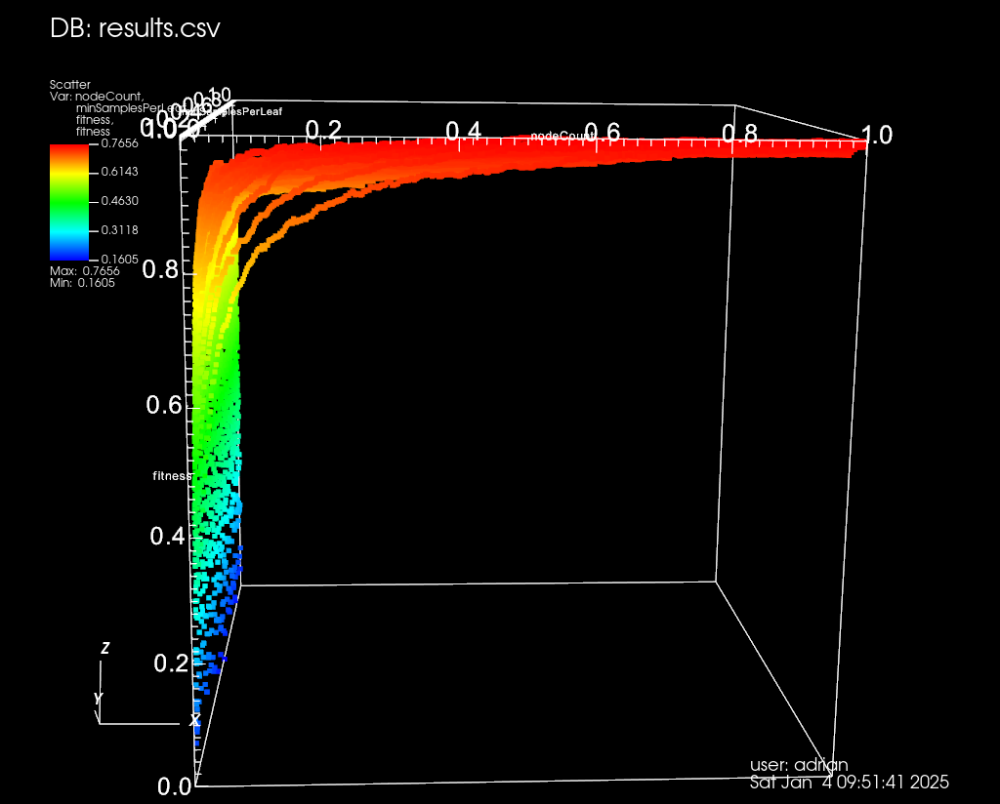 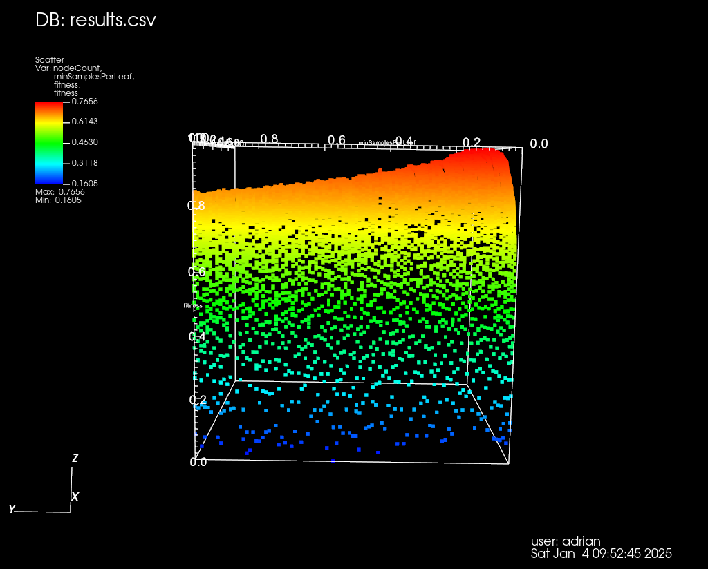 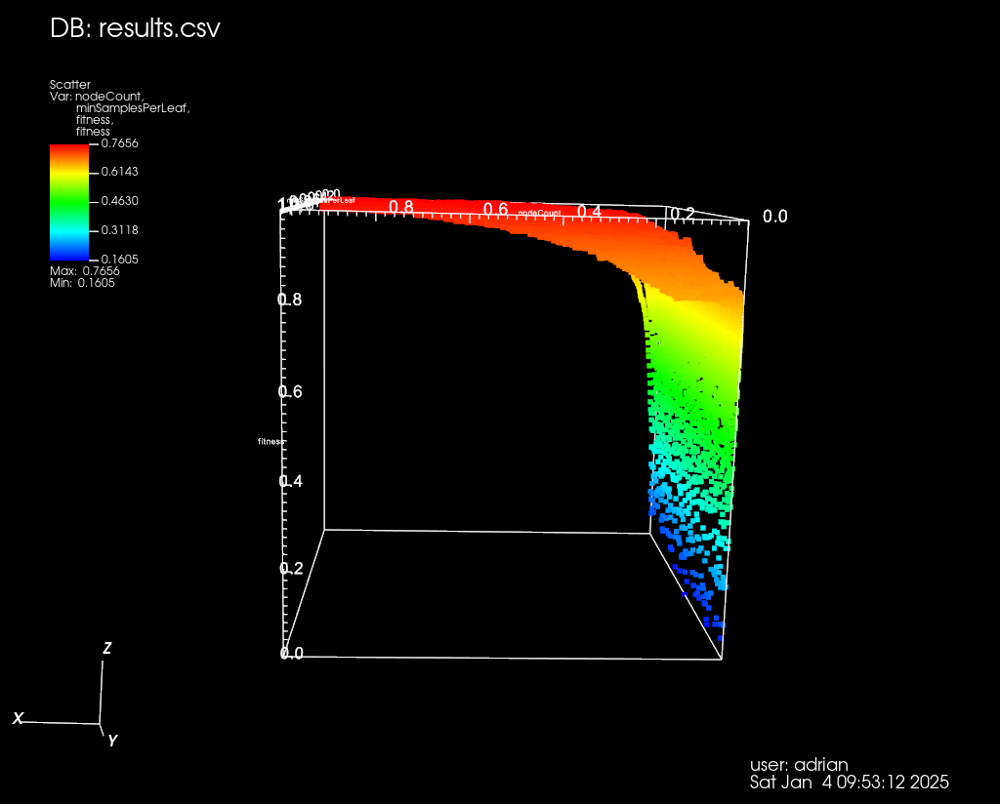 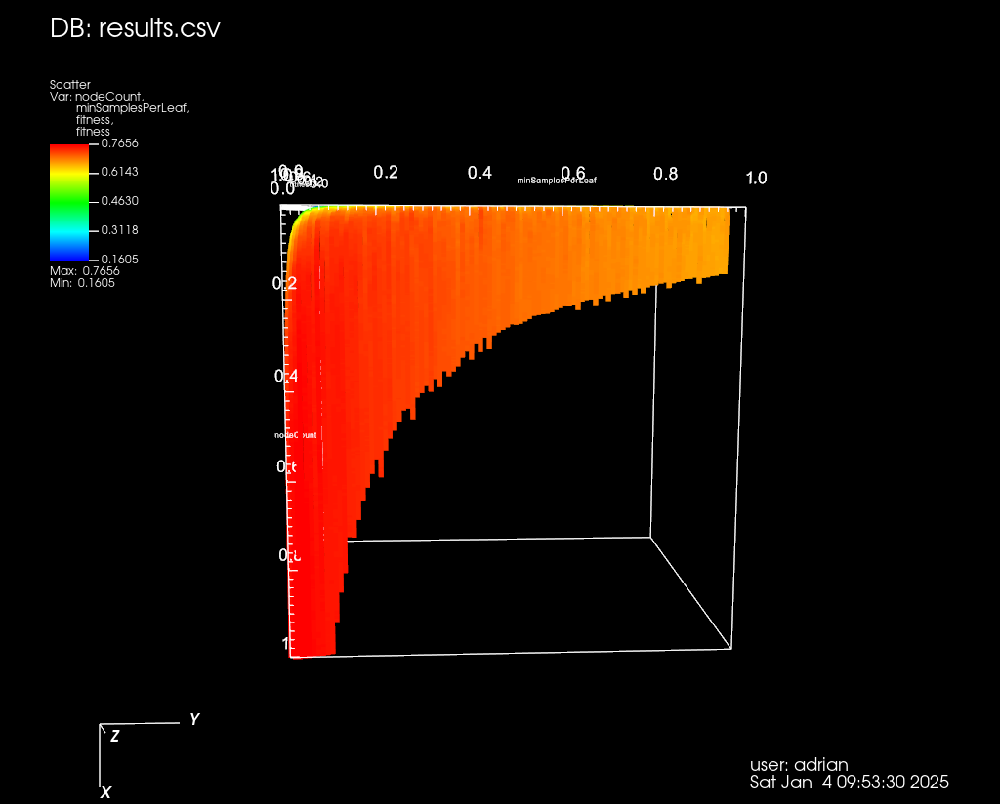 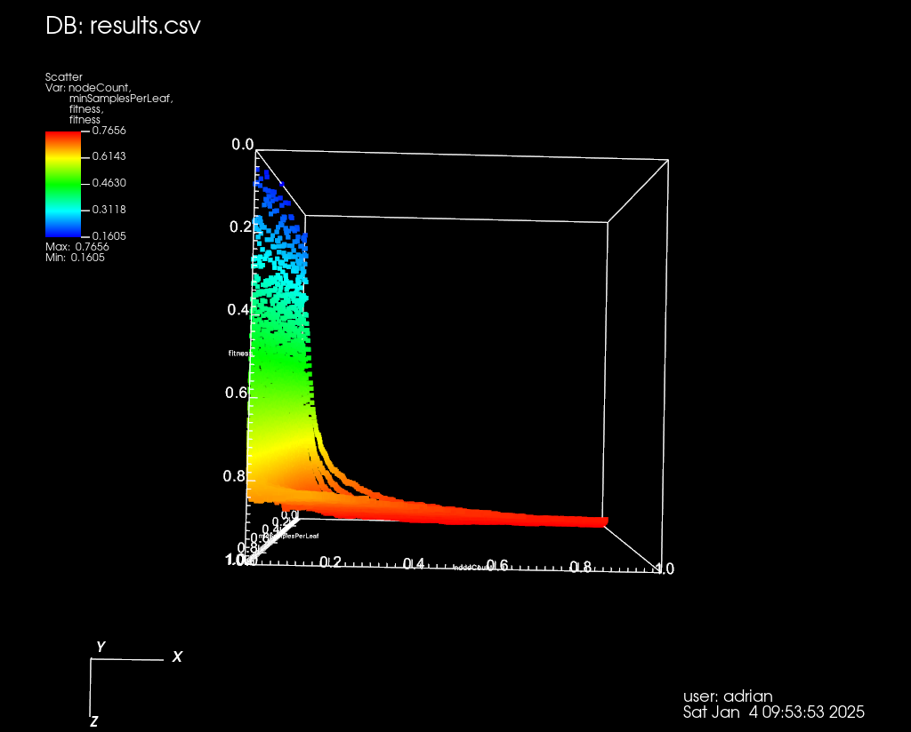Building on the previous experiment, and setting the number of input components per tree to 50 (well above the established minimum viable threshold), this experiment explored the minimum leaf size threshold. Whereby a tree will stop growing if the number of samples in a leaf is less than the threshold. This is a common method of controlling overfitting on regular decision trees, but given the nature of extra random trees already being quite robust to overfitting, it seemed worth exploring.
Again forests were started at 1 tree and grown to 500 trees, although this trial was taken to it's conclusion due to the much smaller number of forest required. Minimum leaf sizes from 1 through 100 were explored. The larger the minimum leaf size (ie., towards 100) the faster the trees are created as they are stopped at a much shallower configuration, however the much deeper trees with a low minimum leaf size (ie., towards 1) proved to be much more accurate on the test set.
There is a sneaky caveat here however, in that it is understood that a model requires a certain amount of complexity (based on the model type) to achieve a level of accuracy, and when we restrict the minimum leaf sizes, we are dramatically stunting the amount of complexity in a forest with an equal number of trees. So although both forests (1 and 100 leaf size) may have 500 trees, the forest with 1 leaf size may have geometrically more complexity than a forest with 100 leaf size. The next experiment should measure the complexity of the forests to validate if its actually the complexity that is driving the accuracy, or if the minimum leaf size is actually a good control for overfitting.
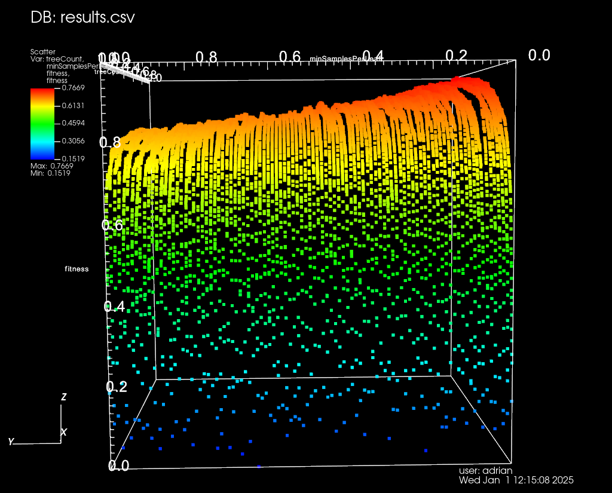 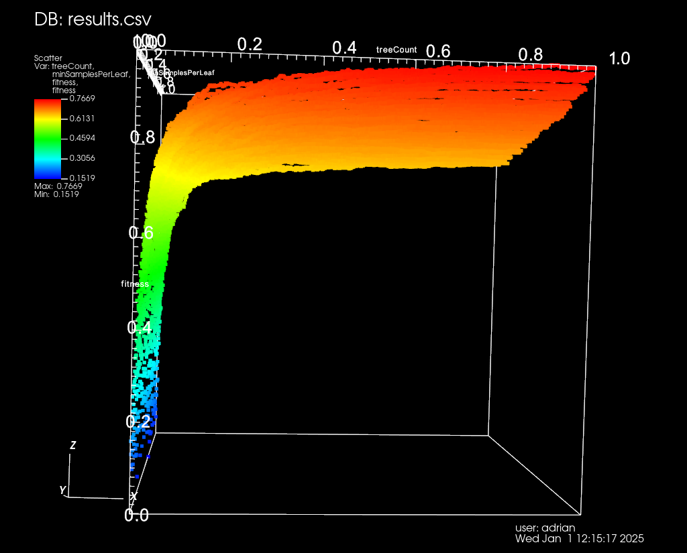 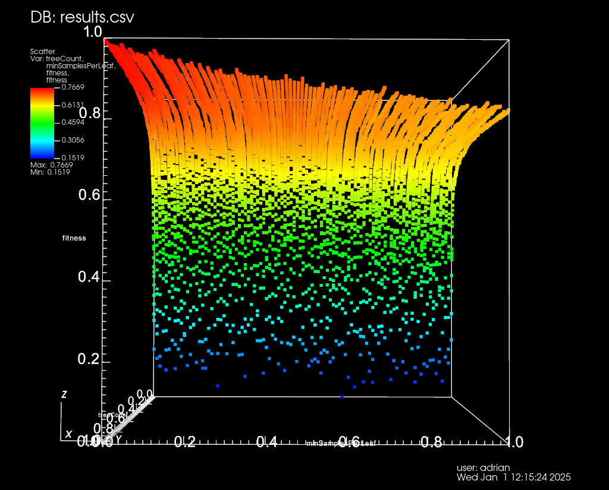 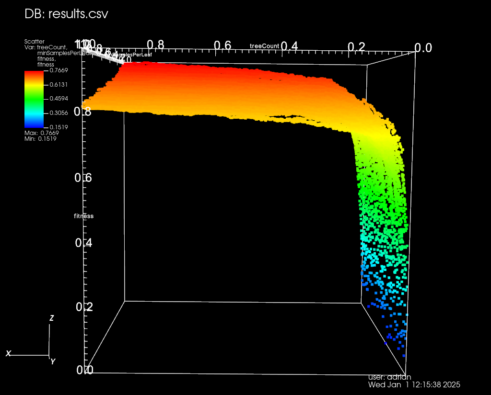 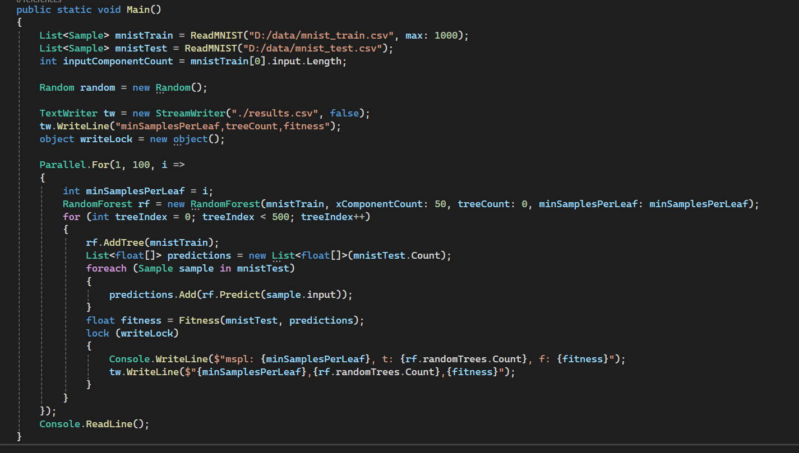This experiment was an exploration of the effects of hyperparameters on the performance of an extra random forest on the MNIST dataset - sometimes also referred to as a random-random forest, or extremely random forest. Each tree in the forest is given a random sample of datapoints with replacement, meaning each tree effectively receives a different weighting of the training data, with some weights being 0 and some weights being more than 1. This reduces correlation between trees to improve generalization. Furthermore, each tree is given a random subset of input features without replacement to consider for making splits. This further reduces correlation between trees and improves generalization. Finally, the characteristic that distinguishes extra random forests from random forests is that the split criteria is randomly selected with no attempt to reduce entropy, error, impurity, loss, or any other measure of the quality of the split. Instead the only crtieria is that the split must be valid, in that the data must be partitioned into two non empty sets. At first glance this might appear nonsensical, but although the split criteria is randomly selected, the actual partitioning of the data is not. It is akin to spilling two colors of beans on a table and randomly drawing a line across the table, one partition may be more black beans, and the other may be more white beans. If we make enough random partitions, the average of the partitions will be a good approximation of the true underlying distribution of beans. This is the essence of the extra random forest. Normal attempts to seek maximum information gain do the same thing, but are expensive and seek to reduce the ultimate complexity of the tree; though this seeking can create bias in the model.
Each sample was 1-hot encoded over 10 classes (aka, the 10 digits in MNSIT), and the input features were not normalized since no measure of information is taken at splits requiring a normalized basis. All trees were grown to completion with a minimum of 1 sample per leaf, or no splits being possible. Feature index was randomized, as well as feature values, to ensure that each split had an equal chance of occuring at any component and value pair. Each forest was unique in that it received a different number of input components per tree, with the actual components being selected randomly for each tree; ie., when 2 input components are provided to a forest, tree A might recieve x=[0, 6], and tree B might receive [34, 2]. Different trees were able to repeat input components. Each forest was started at 1 tree, measured against a test set, then iteratively had 1 tree added before testing again. Trees were grown in this way up to 500 trees per forest.
Much to my surprise, only the forests with a very small number of input components per tree (less than 10 or so out of a possible 784) performed poorly, as shown by the fingers on one side of the graph in teal, green and yellow. Once enough input components are provided the fitness of the forests are essentially equal. This is likely in line with the typical random forest input count selection criteria of sqrt(n) input components per tree, in this case sqrt(784) = 28 input components. Though this is surely not observed in all data sets. There is also a very clear learning curve and ceiling, whereby the addition of further trees has significantly reduced returns on error reduction. This graph took around 60 hours to run on a 16 core machine (non-gpu), written in C#. Not all forests finished growing before the experiment was stopped, but the trend is quite clear.
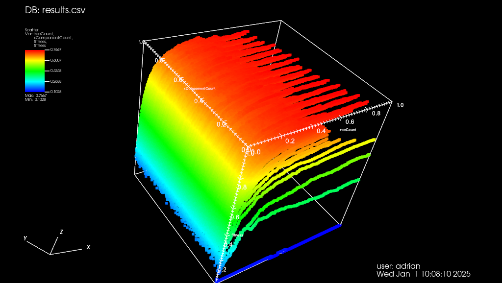 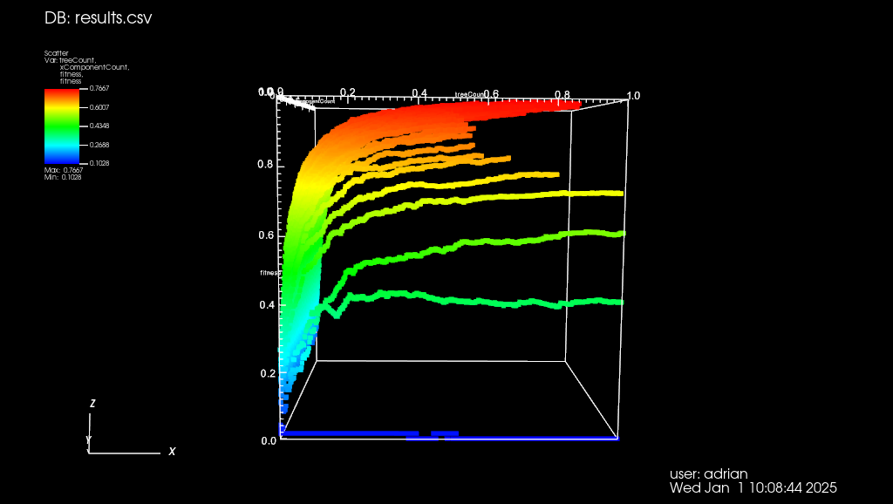 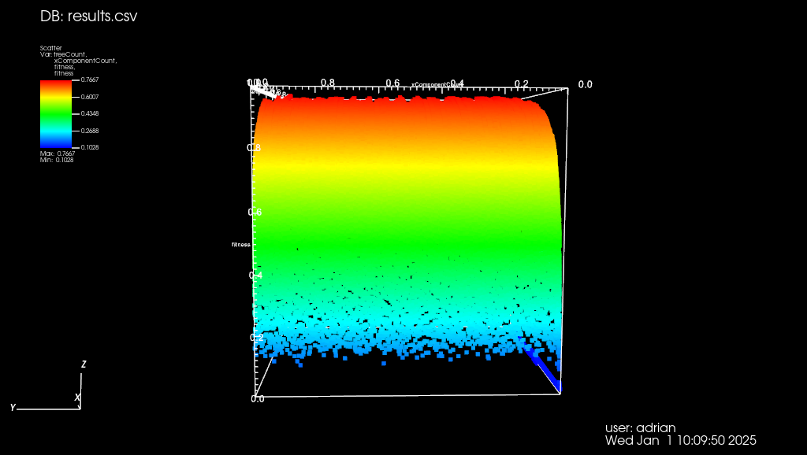 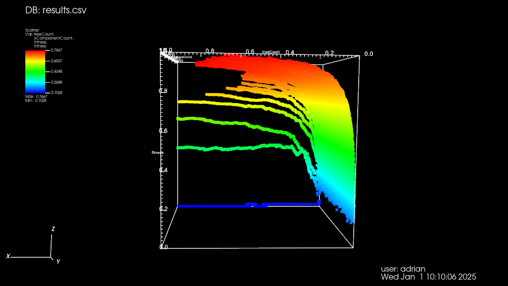 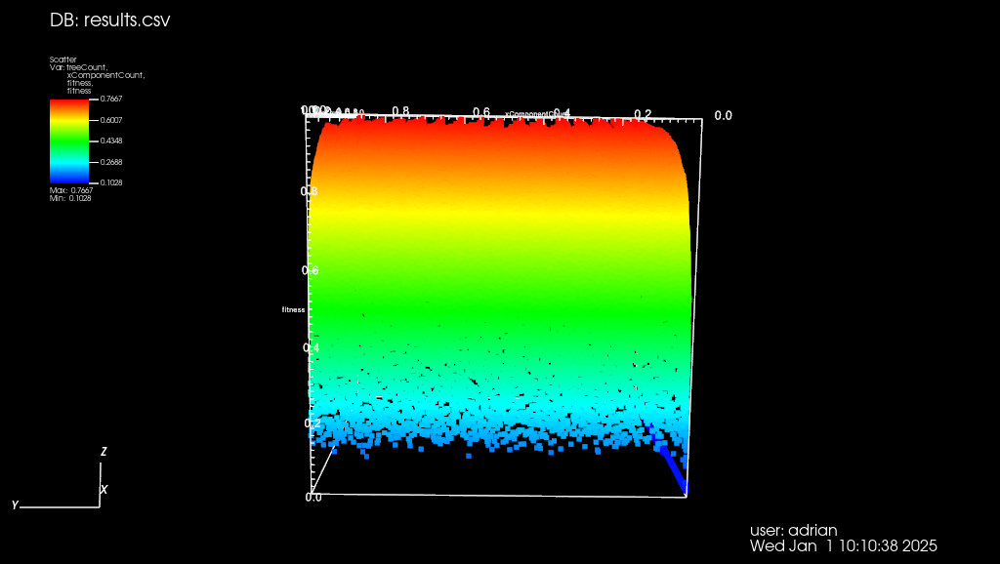 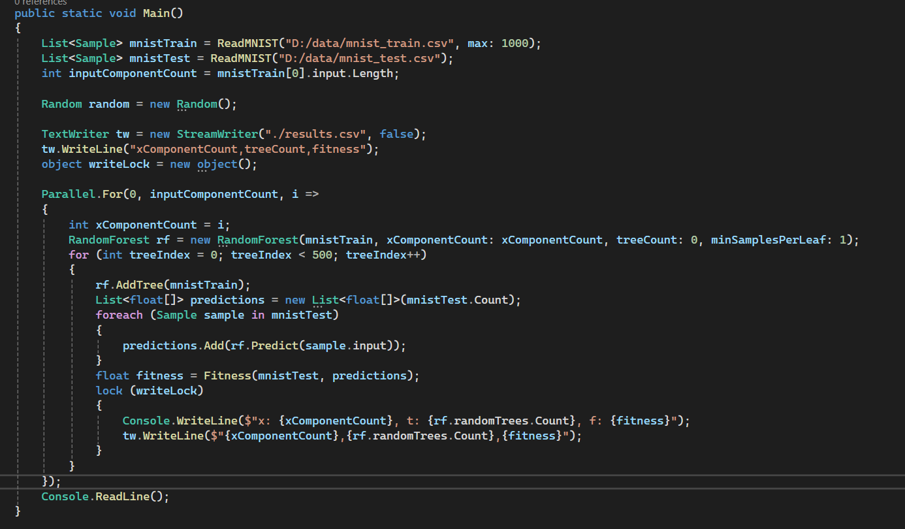